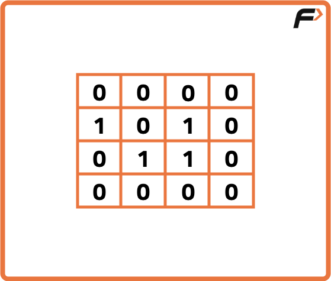
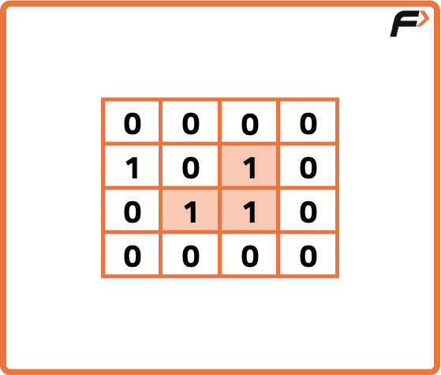
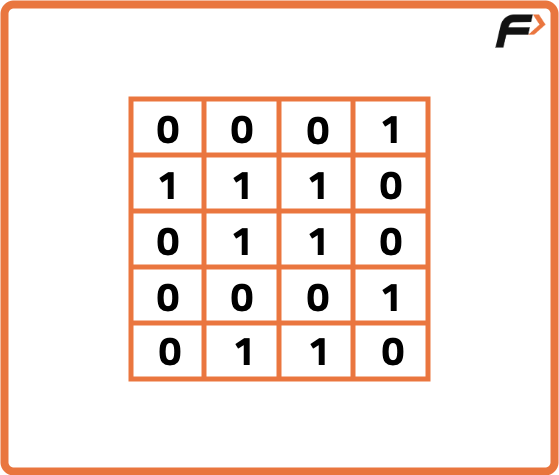
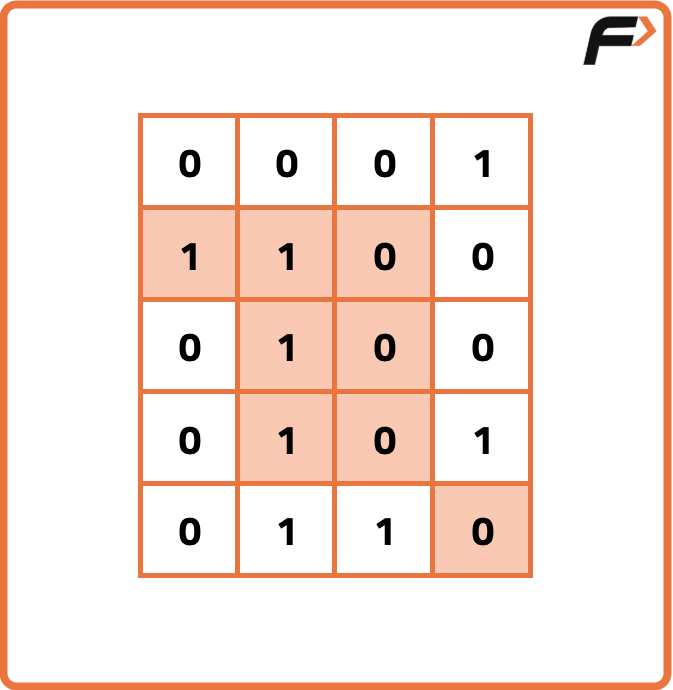

Archived from https://takeuforward.org/graph/number-of-enclaves/
Problem Statement: You are given an N x M binary matrix grid, where 0 represents a sea cell and 1
represents a land cell. A move consists of walking from one land cell to another adjacent (4-directionally) land
cell or walking off the boundary of the grid. Find the number of land cells in the grid for which we cannot walk off
the boundary of the grid in any number of moves..
Examples
Example 1:
Input:

Output:
Explanation:The highlighted cells represent the land cells.
The highlighted cells represent the land cells.

Example 2:
Input:

Output:

Explanation:The highlighted cells represent the land cells.
Disclaimer: Here is the practice link to
help you assess your knowledge better. It's highly recommend trying to
solve it before looking at the solution.
Approach
Algorithm
Cells that are connected to the boundary (first row, last row, first column, last column)
cannot be enclaves.
So, the idea is to perform a BFS (or DFS) starting from all land cells on the boundary and
mark all reachable land cells as visited.
At the end, the unvisited land cells inside the grid are the enclaves.
Approach:
Initialize a queue for BFS and a vis array to track visited
cells.
Traverse the boundary of the grid. For every boundary land cell
(grid[i][j] == 1), mark it visited and push it into the queue.
Run BFS from these boundary land cells:
At each step, pop a cell and explore its 4 neighbors (up, right, down, left).
If the neighbor is land and not yet visited, mark it visited and push it into
the queue.
After BFS, iterate over the entire grid. Any land cell (grid[i][j] == 1)
that remains unvisited is an enclave.
Count these enclaves and return the result.
Code
#include <bits/stdc++.h>
using namespace std;
class Solution {
public:
// Computes the count of land cells not reachable from boundary (enclaves)
int numberOfEnclaves(vector<vector<int>>& grid) {
// Handle empty grid
if (grid.empty() || grid[0].empty()) return 0;
// Fetch dimensions
int n = (int)grid.size();
int m = (int)grid[0].size();
// Create visited matrix initialized to 0
vector<vector<int>> vis(n, vector<int>(m, 0));
// Create a queue for BFS
queue<pair<int,int>> q;
// Traverse all boundary cells and enqueue boundary lands
for (int i = 0; i < n; i++) {
for (int j = 0; j < m; j++) {
// Check if current cell lies on boundary
if (i == 0 || j == 0 || i == n - 1 || j == m - 1) {
// If boundary cell is land, mark visited and push to queue
if (grid[i][j] == 1) {
vis[i][j] = 1;
q.push({i, j});
}
}
}
}
// Direction vectors for 4-neighborhood
int delrow[] = {-1, 0, +1, 0};
int delcol[] = {0, +1, 0, -1};
// BFS to mark all land cells reachable from boundary
while (!q.empty()) {
auto [row, col] = q.front();
q.pop();
// Explore four directions
for (int k = 0; k < 4; k++) {
int nrow = row + delrow[k];
int ncol = col + delcol[k];
// Check bounds, unvisited, and land
if (nrow >= 0 && nrow < n && ncol >= 0 && ncol < m
&& !vis[nrow][ncol] && grid[nrow][ncol] == 1) {
vis[nrow][ncol] = 1;
q.push({nrow, ncol});
}
}
}
// Count land cells that are not visited (i.e., enclaves)
int cnt = 0;
for (int i = 0; i < n; i++) {
for (int j = 0; j < m; j++) {
if (grid[i][j] == 1 && vis[i][j] == 0) cnt++;
}
}
return cnt;
}
};
int main() {
// Define the grid
vector<vector<int>> grid{
{0, 0, 0, 0},
{1, 0, 1, 0},
{0, 1, 1, 0},
{0, 0, 0, 0}
};
// Create Solution instance
Solution obj;
// Compute and print the number of enclaves
cout << obj.numberOfEnclaves(grid) << endl; // Expected: 3
return 0;
}
import java.util.*;
class Solution {
// Computes the count of land cells not reachable from boundary (enclaves)
public int numberOfEnclaves(int[][] grid) {
// Handle empty grid
if (grid == null || grid.length == 0 || grid[0].length == 0) return 0;
// Fetch dimensions
int n = grid.length, m = grid[0].length;
// Create visited matrix initialized to false
boolean[][] vis = new boolean[n][m];
// Create a queue for BFS
ArrayDeque<int[]> q = new ArrayDeque<>();
// Traverse all boundary cells and enqueue boundary lands
for (int i = 0; i < n; i++) {
for (int j = 0; j < m; j++) {
// Check if current cell lies on boundary
if (i == 0 || j == 0 || i == n - 1 || j == m - 1) {
// If boundary cell is land, mark visited and push to queue
if (grid[i][j] == 1 && !vis[i][j]) {
vis[i][j] = true;
q.add(new int[]{i, j});
}
}
}
}
// Direction vectors for 4-neighborhood
int[] delrow = {-1, 0, 1, 0};
int[] delcol = {0, 1, 0, -1};
// BFS to mark all land cells reachable from boundary
while (!q.isEmpty()) {
int[] cur = q.poll();
int row = cur[0], col = cur[1];
// Explore four directions
for (int k = 0; k < 4; k++) {
int nrow = row + delrow[k];
int ncol = col + delcol[k];
// Check bounds, unvisited, and land
if (nrow >= 0 && nrow < n && ncol >= 0 && ncol < m
&& !vis[nrow][ncol] && grid[nrow][ncol] == 1) {
vis[nrow][ncol] = true;
q.add(new int[]{nrow, ncol});
}
}
}
// Count land cells that are not visited (i.e., enclaves)
int cnt = 0;
for (int i = 0; i < n; i++) {
for (int j = 0; j < m; j++) {
if (grid[i][j] == 1 && !vis[i][j]) cnt++;
}
}
return cnt;
}
}
class Main {
public static void main(String[] args) {
// Define the grid
int[][] grid = {
{0, 0, 0, 0},
{1, 0, 1, 0},
{0, 1, 1, 0},
{0, 0, 0, 0}
};
// Create Solution instance
Solution obj = new Solution();
// Compute and print the number of enclaves
System.out.println(obj.numberOfEnclaves(grid)); // Expected: 3
}
}
from collections import deque
class Solution:
# Computes the count of land cells not reachable from boundary (enclaves)
def numberOfEnclaves(self, grid):
# Handle empty grid
if not grid or not grid[0]:
return 0
# Fetch dimensions
n, m = len(grid), len(grid[0])
# Create visited matrix initialized to False
vis = [[False] * m for _ in range(n)]
# Create a queue for BFS
q = deque()
# Traverse all boundary cells and enqueue boundary lands
for i in range(n):
for j in range(m):
# Check if current cell lies on boundary
if i == 0 or j == 0 or i == n - 1 or j == m - 1:
# If boundary cell is land, mark visited and push to queue
if grid[i][j] == 1 and not vis[i][j]:
vis[i][j] = True
q.append((i, j))
# Direction vectors for 4-neighborhood
delrow = [-1, 0, 1, 0]
delcol = [0, 1, 0, -1]
# BFS to mark all land cells reachable from boundary
while q:
row, col = q.popleft()
# Explore four directions
for k in range(4):
nrow = row + delrow[k]
ncol = col + delcol[k]
# Check bounds, unvisited, and land
if 0 <= nrow < n and 0 <= ncol < m and not vis[nrow][ncol] and grid[nrow][ncol] == 1:
vis[nrow][ncol] = True
q.append((nrow, ncol))
# Count land cells that are not visited (i.e., enclaves)
cnt = 0
for i in range(n):
for j in range(m):
if grid[i][j] == 1 and not vis[i][j]:
cnt += 1
return cnt
if __name__ == "__main__":
# Define the grid
grid = [
[0, 0, 0, 0],
[1, 0, 1, 0],
[0, 1, 1, 0],
[0, 0, 0, 0]
]
# Create Solution instance
obj = Solution()
# Compute and print the number of enclaves
print(obj.numberOfEnclaves(grid)) # Expected: 3
class Solution {
// Computes the count of land cells not reachable from boundary (enclaves)
numberOfEnclaves(grid) {
// Handle empty grid
if (!grid || grid.length === 0 || grid[0].length === 0) return 0;
// Fetch dimensions
const n = grid.length, m = grid[0].length;
// Create visited matrix initialized to false
const vis = Array.from({ length: n }, () => Array(m).fill(false));
// Create a queue for BFS
const q = [];
// Helper to push into queue
const enqueue = (r, c) => q.push([r, c]);
// Traverse all boundary cells and enqueue boundary lands
for (let i = 0; i < n; i++) {
for (let j = 0; j < m; j++) {
// Check if current cell lies on boundary
if (i === 0 || j === 0 || i === n - 1 || j === m - 1) {
// If boundary cell is land, mark visited and push to queue
if (grid[i][j] === 1 && !vis[i][j]) {
vis[i][j] = true;
enqueue(i, j);
}
}
}
}
// Direction vectors for 4-neighborhood
const delrow = [-1, 0, 1, 0];
const delcol = [0, 1, 0, -1];
// BFS to mark all land cells reachable from boundary
while (q.length > 0) {
const [row, col] = q.shift();
// Explore four directions
for (let k = 0; k < 4; k++) {
const nrow = row + delrow[k];
const ncol = col + delcol[k];
// Check bounds, unvisited, and land
if (nrow >= 0 && nrow < n && ncol >= 0 && ncol < m
&& !vis[nrow][ncol] && grid[nrow][ncol] === 1) {
vis[nrow][ncol] = true;
enqueue(nrow, ncol);
}
}
}
// Count land cells that are not visited (i.e., enclaves)
let cnt = 0;
for (let i = 0; i < n; i++) {
for (let j = 0; j < m; j++) {
if (grid[i][j] === 1 && !vis[i][j]) cnt++;
}
}
return cnt;
}
}
// Driver code
(function main() {
// Define the grid
const grid = [
[0, 0, 0, 0],
[1, 0, 1, 0],
[0, 1, 1, 0],
[0, 0, 0, 0]
];
// Create Solution instance
const obj = new Solution();
// Compute and print the number of enclaves
console.log(obj.numberOfEnclaves(grid)); // Expected: 3
})();
Complexity Analysis
Time Complexity: O(n × m), where n is the number of rows and
m is the number of columns. Each cell is processed at most once.
Space Complexity: O(n × m), due to the vis array and BFS queue in
the worst case.